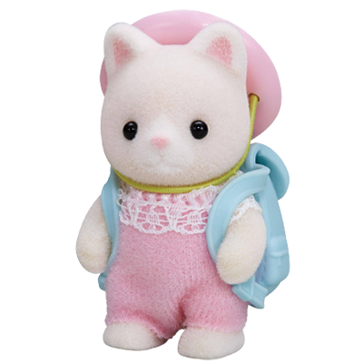
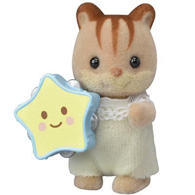
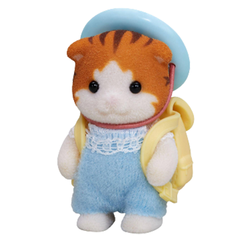
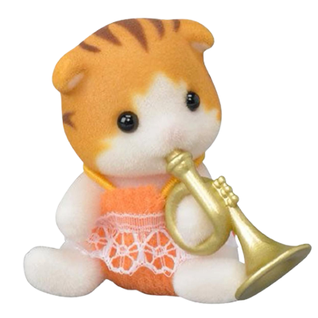
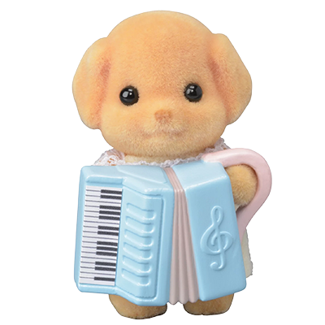
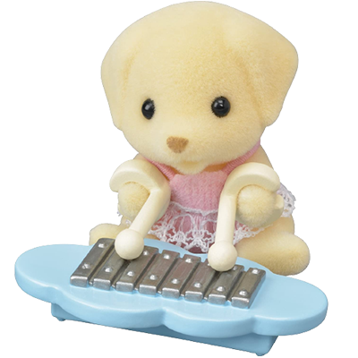
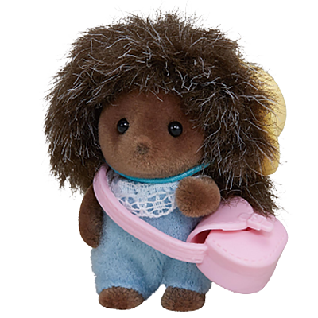

back to main
Sylvanian Families (シルバニアファミリー, Shirubania Famirī) (known as Calico Critters in the US and Canada) is a line of collectible anthropomorphic animal figurines made of flocked plastic.[1] They were created by the Japanese gaming company Epoch in 1985 and distributed worldwide by a number of companies.
At the beginning of production, on March 20, 1985, Sylvanian Families were created and released in Japan by Epoch, which uses the concept of dollhouses and anthropomorphic animal figures. The first releases of the dollhouses and other playsets were made of porcelain and the furniture was made of wood, but later releases replaced the materials with plastic and metal in the production. The toys were later released in North America the same year, but with different packaging and minor differences to the characters themselves. The toyline was originally titled Pleasant Friends of the Forest Epoch System Collection Animal Toy Sylvanian Families (森のゆかいな仲間たち エポック社 システム・コレクション・アニマルトーイ・シルバニアファミリー, Mori no yukaina nakama-tachi Epokku-sha shisutemu korekushon animaru tōi shirubania famirī), but was changed to its current name. "Sylvanian" means "of the forest", from the Roman god Silvanus.
In September 1987, the series spawned an animated series produced by DIC Animation City and TMS Entertainment, which ran for 13 episodes. The series was popular in the UK and Spain. The name of the television series based on Sylvanian Families was adapted in different countries. It was also shown in the US in the late 1980s on The CBN Family Channel[2] and in the late 1990s on PAX TV. Later that same year, the success in these markets led to expansion into Western Europe, beginning with the UK subsidiary of Tomy acquiring exclusive rights for the brand in the UK. Tomy introduced Sylvanian Families into the UK market in 1987, and it quickly became a bestseller.[3]
By 1988, Sylvanian Families had become a major success around the world, winning the British Association of Toy Retailers award for "Toy of the Year" three years consecutively, in 1987, 1988 and 1989.
In 1993, Tomy, who had been distributing the toys worldwide, lost the rights to the name "Sylvanian Families" in Canada and the US. Tomy reintroduced the line under the new name Calico Critters of Cloverleaf Corners, now simply just called Calico Critters. The Calico Critters line is currently distributed in the US and Canada by Epoch Everlasting Play, LLC.
By the late 1990s, Sylvanian Families had been discontinued in the UK, although since 1999, they have been reintroduced by Flair.[citation needed] An independent Sylvanian Families shop opened in 1992 in Finsbury Park, London.[4] Subsequently, Sylvanian Families have been reintroduced in Australia and are becoming more widely available there. Tomy stopped selling Calico Critters, but a new company, International Playthings, now called Epoch Everlasting Play, picked up the line.
In 1999, the toyline celebrated its 15th anniversary in Japan, with the opening of the themed restaurant Sylvanian Forest Kitchen (シルバニア森のキッチン, Shirubania mori no kitchin), which was operated and managed by Epoch. The restaurant not only served food, but also sold merchandise and toys based on the franchise. The restaurant closed in February 2011.[citation needed]
In 2004, the franchise celebrated its 20th anniversary in Japan with the release of the Walnut Squirrel Family. That July, Epoch announced a new attraction in Grinpa, a theme park managed by Fuji Kyuko. The attraction, originally called Sylvanian Village (シルバニアビレッジ, Shirubania Birejji) before it was renamed to Sylvanian Gardens (シルバニアガーデン, Shirubania Gāden), began its construction with Epoch's supervision. In 2005, the franchise hosted its first live event titled Sylvanian Families Musical~The Big Commotion on the Eve of the Party! (シルバニアファミリーミュージカル～パーティーイブは大さわぎ！, Shirubania famirī myūjikaru ~ pātī ibu wa ōsawagi!) which was hosted at the Gekidan Kogumaza Theatre. It was later released on DVD in 2006.
In 2006, the characters in the toy line were chosen to be the mascots for the National Federation of Workers and Consumers Insurance Cooperativess national mutual aid. By the end of the year, the toys sold a total of 78 million units.[5]
In 2007, Epoch teamed up with Itochu, Nippon Columbia and Shogakukan to produce a 3D CGI OVA series based on the toy line produced by Kōji Kawaguchi and Yumiko Muriai and directed by Akira Takamura. All 3 episodes were released on June 20. According to Epoch, more episodes were planned, but these were never produced for unknown reasons. In the UK, Flair celebrated the franchise's 20th anniversary with a selected number of new items. The best selling was an Otter boat, and a reintroduced Dalmatian Family who now wore party hats that read "Happy 20th!".
In March 2009, the series celebrated its 25th anniversary in Japan with the opening of the Sylvanian Gardens attraction in Grinpa. Managed by Epoch, the attraction features real-life replicas of the houses and buildings from the toy line as well as a museum featuring an exhibition about the history of the toys. The attraction also has a shop which sells items exclusive to the park.[citation needed] In 2010, the franchise again hosted two musicals, Sylvanian Families Exciting Musical (シルバニアファミリーわくわくミュージカル, Shirubania famirī wakuwaku myūjikaru) and Sylvanian Families Exciting Stage (シルバニアファミリーわくわくステージ, Shirubania famirī wakuwaku sutēji), which both became a staple on promoting the toys in conventions.
In 2013, the rights for the toys in the UK were transferred to the newly formed Epoch UK, and they began distributing the toys from January 1, 2014 onwards. Flair stopped distributing the toys on December 31 the same year.[6]
In 2015, a series of tableaux by the British artist Mimsy featuring Sylvanian Families being threatened by "MICE-IS" terrorists was banned from the Passion for Freedom exhibition.[7]
In 2018, an theme park opened based around the Sylvanian Parks as part of Komorebi Mori no Ibaraido with the grand opening on July 14, and officially opening to the public on June 23.[8]
In 2020 to celebrate the 35th anniversary customers were asked to participate in a poll to choose their favourite character with the winner being reintroduced. The sheep family came third, beaver family second and the duck family were announced as the winners.[9]
Also in 2020 the second Sylvanian Families park opened in the Osaka's Agricultural park.[10]
The Sylvanian Families shop in London was closed in April 2023.[4]
The entire franchise is set in Sylvania (シルバニア, Shirubania), a fictional village somewhere in North America, later revised to Great Nature. The majority of the families are all rural middle-class, with many of them owning localized but successful family businesses, or having jobs, such as doctor, teacher, artist, news reporter, carpenter or bus driver. They are designed wearing 1950s-like fashion. They can live in large, multistory houses, or own dwellings based on the premise of a kind of holiday home. The houses are designed realistically and can be decorated and redesigned. They can also participate in leisure activities such as sailing or horse-riding, and often host garden parties or go on short camping holidays.[11]
The characters, grouped into families, originally depicted typical woodland creatures such as rabbits, squirrels, bears, beavers, hedgehogs, foxes, deer, owls, raccoons, otters, skunks and mice, and later expanded to other animals such as cats, dogs, hamsters, guinea pigs, penguins, monkeys, cows, sheep, pigs, elephants, pandas, kangaroos, koalas, meerkats, giraffes and sea lions. Most families consist of a father, mother, sister and brother, and continue to add family members from there on such as grandparents, babies, and older siblings.






